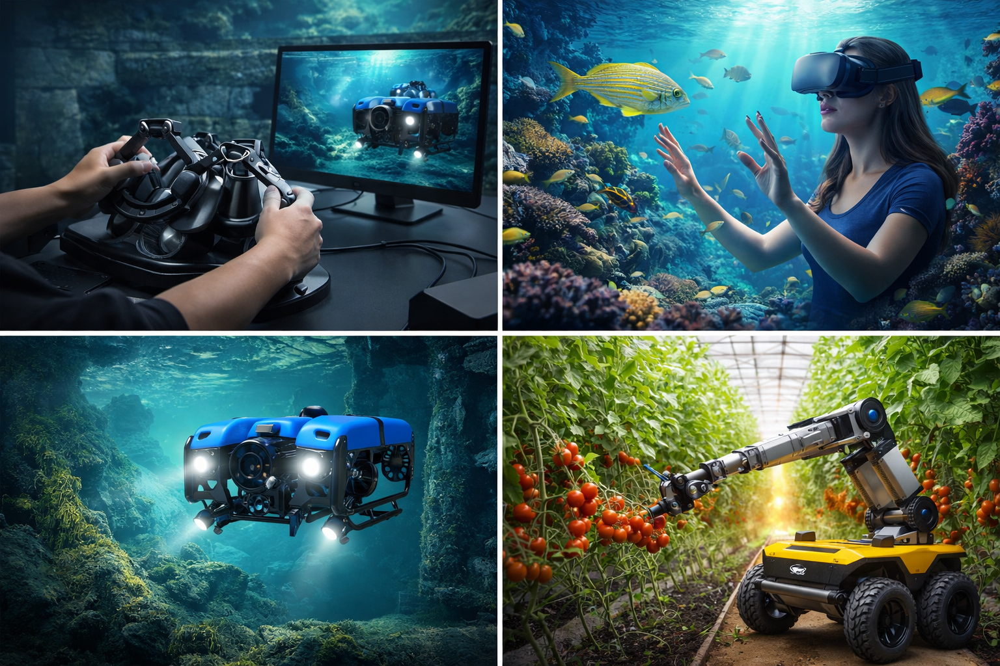
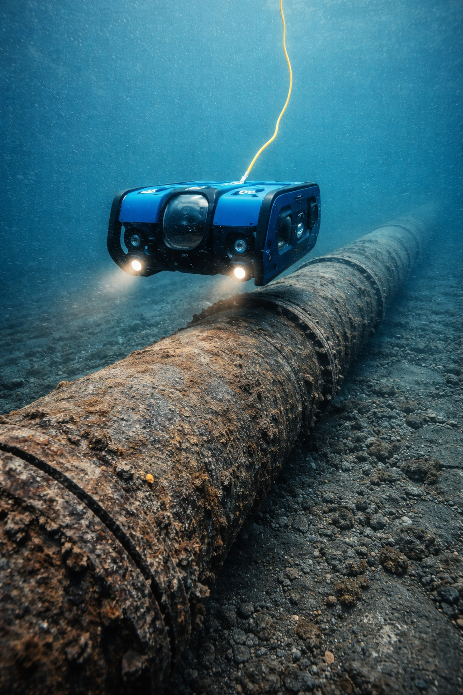
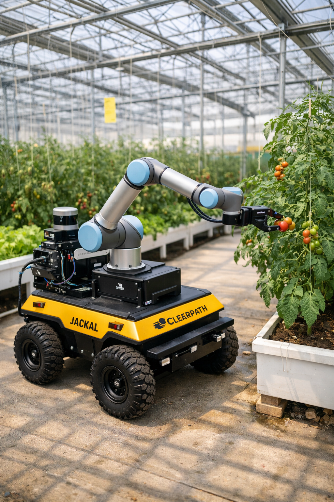

O1. Multimodal Framework
Design and implement a unified teleoperation software framework integrating visual and haptic feedback for navigation, inspection, and physical intervention.
Immersive visual-haptic teleoperation for safe robotic inspection and physical intervention in underwater and agricultural environments.
This project develops a unified visual-haptic teleoperation framework integrating multimodal feedback, predictive safety control, and immersive XR interaction. The system is designed to improve operator awareness, support safer maneuvering, and enable robust remote intervention across challenging robotic scenarios.

Remote robotic operation in extreme and semi-structured environments is constrained by limited operator feedback, uncertain maneuvering conditions, and reduced situational awareness. Conventional visual-only teleoperation often fails to provide the reliability and contact-awareness needed for safe inspection and physical intervention.
The Visual-Haptics project addresses these limitations through a dedicated software and interaction framework that fuses visual sensing with haptic feedback, evaluates predictive control in simulation, and validates the integrated system on terrestrial and underwater robotic platforms.
Design and implement a unified teleoperation software framework integrating visual and haptic feedback for navigation, inspection, and physical intervention.
Explore predictive control approaches for obstacle avoidance, safe maneuvering, and operator assistance under uncertainty.
Assess performance and user experience through controlled experiments measuring accuracy, workload, usability, and perceived presence.
Validate the framework across terrestrial and underwater robotic platforms, advancing from laboratory prototype toward relevant-environment testing.

Validation in underwater environments where visibility, maneuverability, and environmental uncertainty complicate remote inspection and contact-aware intervention.

Validation in agricultural settings involving constrained navigation, delicate interaction, and semi-structured physical intervention tasks.
Lab validation to relevant environment testing
Integrated multimodal operator interaction
Safer maneuvering and obstacle-aware assistance
Underwater and terrestrial robotic validation
Learn more about the scientific motivation, technical work packages, validation roadmap, publications, and team expertise behind the project.